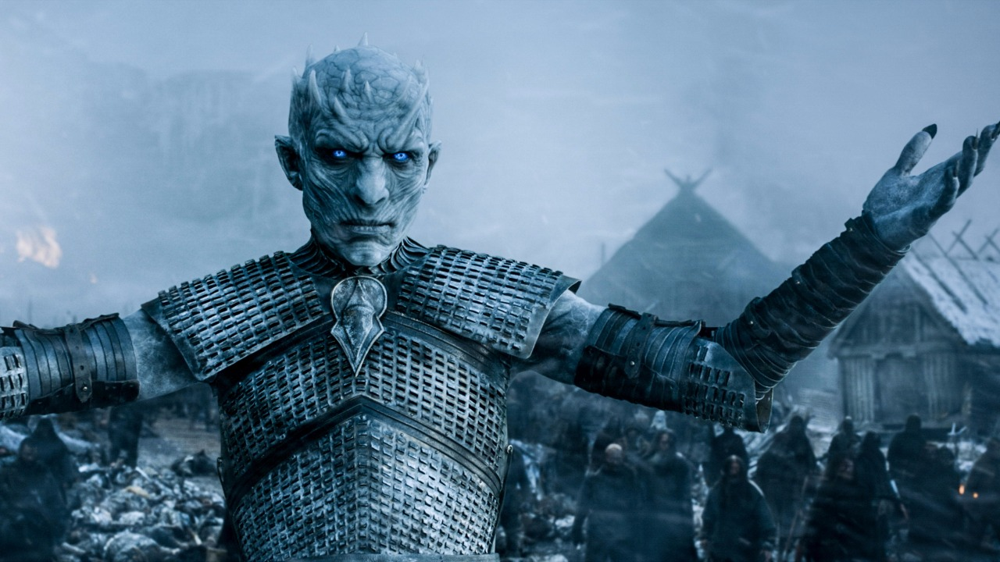

Vagantes Brancos
{kind=link}
Os Outros, conhecidos também como Caminhantes Brancos, são uma espécie de humanoides que existem ao norte da Muralha. Antes dos eventos de As Crônicas de Gelo e Fogo, os Outros não tinham, supostamente, sido vistos por muitos milhares de anos. Até agora, os Outros apareceram somente duas vezes na saga inteira, e seus propósitos permanecem desconhecidos.
História
De acordo com a lenda, os Outros apareceram pela primeira vez durante um inverno que durou toda uma geração e um período de escuridão conhecido como A Longa Noite. Eventualmente, eles foram derrotados, supostamente pela Patrulha da Noite, e a Muralha pode ter sido erguida como uma defesa contra eles. Em contradição, o Rei da Noite parece ter se casado com uma Caminhante Branca, mas depois que foi derrotado, não foi-se ouvido falar dos Outros, e são lembrados ao sul da Muralha como nada mais do que contos de fadas para assustar as crianças. Entretanto, o Senhor Comandante Jeor Mormont, curiosamente, em uma conversa com Tyrion Lannister, disse que os Caminhantes Brancos foram avistados por pescadores na costa próxima a Atalaialeste do Mar, com pouca preocupação. Ele não disse se foram vistos na costa norte ou sul da Muralha. Tyrion não conseguiu segurar sua língua quando os Caminhantes Brancos foram mencionados, e respondeu dizendo que os pescadores de Lannisporto frequentemente vêem sereias. A conversa, então, mudou para os movimentos dos selvagens, que era, naquele momento, mais preocupante. A primeira aparição dos Outros na saga ocorre no prólogo do primeiro livro, matando dois patrulheiros da Patrulha da Noite. Craster dava seus filhos infantes aos Outros, e suas esposas diziam que eles se transformam em Caminhantes Brancos, embora isto ainda não tenha sido estabelecido. Um Outro aparece no prólogo de Guerra dos Tronos como alto, descarnado e duro como ossos velhos, com uma carne pálida como leite, possuindo "olhos azuis, mais profundos e mais azuis do que quaisquer olhos humanos, de um azul que queimava como gelo"[4]. A Caminhante Branca que se casou com o Rei da Noite é descrita de forma similar, "com a pele branca como a lua e os olhos que eram como estrelas azuis"[2]. A Velha Ama os descreve como coisas frias e mortas, que odeiam tudo que é vivo. Entretanto, em um e-mail trocado com o artista de quadrinhos Tommy Patterson, George R. R. Martin recentemente escreveu: "Os Outros não estão mortos. Eles são estranhos, belos (...) pense, oh (...) um Sídhe feito de gelo, algo como aquilo (...) uma forma diferente de vida... inumana, elegante, perigosa". Eles usam uma armadura brilhante que muda de cor com cada passo, como a armadura que dizem ter sido usada pelos Filhos da Floresta. Os Outros andam com leveza pela neve, e não deixam pegadas para marcar suas passagens. Aparentam ser habilidosos espadachins, empunhando finas espadas de cristal que dizem ser tão frias que despedaçam qualquer objeto que tocam, incluindo as espadas de aço usadas pela Patrulha da Noite O idioma deles é desconhecido, embora possa ser o Idioma Antigo. Quando um falou no prólogo, sua voz soou "como o quebrar do gelo num lago de inverno", mas isto pode ter sido apenas um discurso figurado. Os selvagens acreditam que os Outros e suas criaturas podem farejar vida, ou melhor, seu calor. As velhas histórias concordam que os Outros vêm quando está frio; ou então fica frio quando eles vêm. Por vezes aparecem durante tempestades de neve e somem quando os céus se limpam. Escondem-se da luz do sol e emergem à noite... ou então a noite cai quando emergem. Algumas histórias falam deles montados em cadáveres de animais mortos, como ursos, lobos gigantes, mamutes, cavalos. O Outro que Samwell Tarly matara estava montado no cavalo morto de Mawney. Os Outors podem ser acompanhados por "aranhas de gelo" tão grandes como cães de caça. Melisandre acredita que os Outros são servos do Grande Outro, um maléfico deus da escuridão, frio e morte, que está em eterna guerra contra R'hllor A aparência das criaturas depende inteiramente da condição do cadáver quando este é erguido. Alguns são como foram em vida, enquanto outros são podres, embora o processo de decomposição não exista no corpo de uma criatura. Todos são facilmente identificados pelos olhos azuis-claros e suas mãos e pés pretos, inchados com sangue congelado e coagulado[10]. As criaturas são, aparentemente, atraídas a sangue quente, e podem atacar com força surpreendente. Parece que elas retém, no mínimo, algumas de suas antigas memórias, já que a criatura que um dia fora Othor pareceu saber onde Jeor Mormont dormia, e quem ele era, enquanto tentou matá-lo, e Cynara reconheceu Varamyr Seis-Peles, mesmo estando no corpo de um lobo. Os outros possuem poucas fraquezas conhecidas, que são registradas em textos antigos. Uma é obsidiana, também chamada de vidro de dragão, ou fogo congelado. Quando Samwell Tarly, acidentalmente, esfaqueou um Outro com uma adaga de obsidiana, sua carne desapareceu, afastando-se em redemoinhos de névoa branca. Textos antigos também relatam uma fraqueza a "aço de dragão", que muitos associam com Aço Valiriano . Mance Rayder acredita que runas mágicas na Muralha impedem os Outros de a atravessarem. Por estarem mortas, as criaturas não sentem dor, e continuam a lutar, independente de seus machucados. Embora o desmembramento total possa pará-las, seus membros e órgãos continuarão a se mexer, apesar de separados de seus corpos. Quando uma criatura é destruída, o azul de seus olhos desaparece. São altamente inflamáveis, sendo rapidamente consumidas ao entrarem em contato com fogo. Não se sabe se as criaturas podem atravessar a Muralha sozinhas, embora cadáveres trazidos através da Muralha, aparentemente, ainda possam ser reanimados como criaturas.